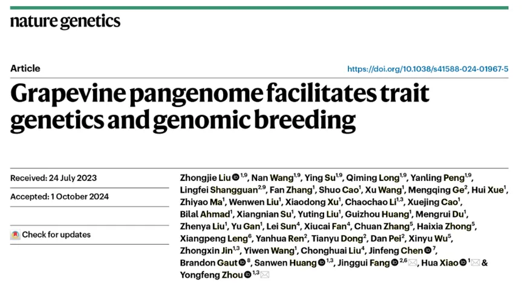
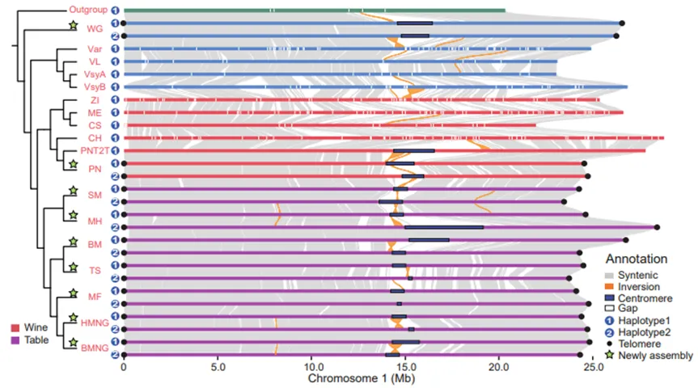
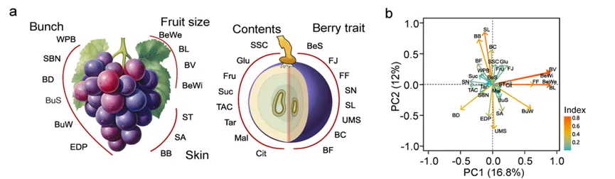
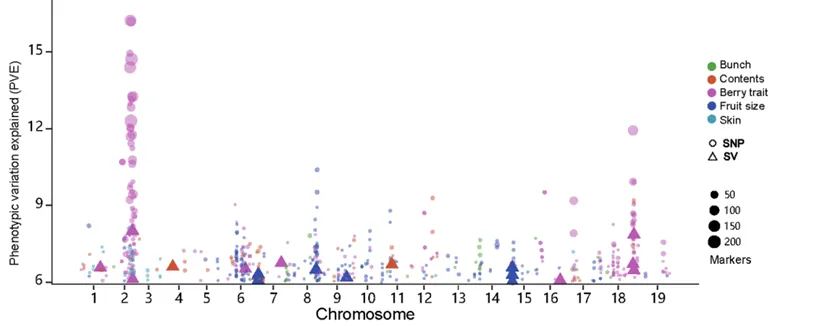
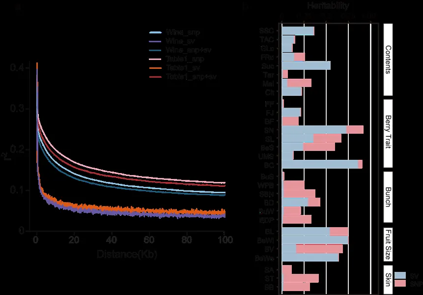
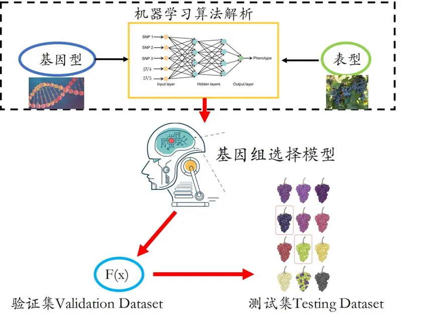
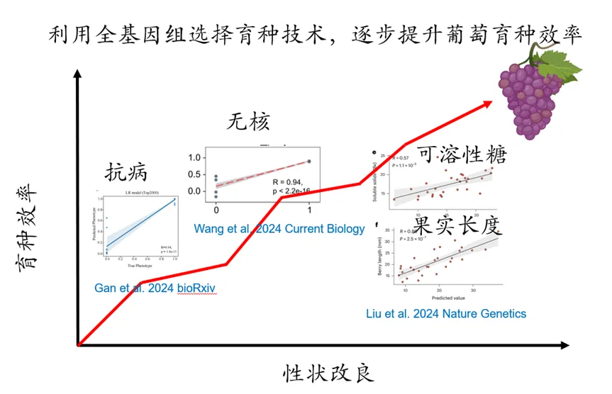
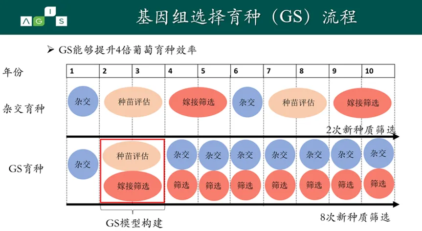
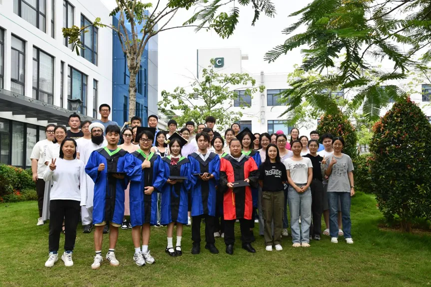

Nature Genetics |基因组所周永锋团队建立葡萄全基因组选择育种体系
原文：https://mp.weixin.qq.com/s?__biz=MzAwMzIzOTk5OQ==&mid=2247522501&idx=1&sn=380114c7c335b7027824157e8e1157cb&chksm=9b3ce195ac4b6883a10c69d02dfb6acefdac790cbde29b7d4ff891887974347a858102a13fa1#rd 合集：文献速递
写在前面
葡萄是一种具有重要经济价值的多年生水果作物，可作为水果食用或作为酿造葡萄酒的原材料，已有逾万年的驯化历史[1]，并且在驯化过程中积累了大量的有害突变[1-3]。由于育种周期长，育种性状的遗传学研究不深入，遗传转化体系不成熟，尚未广泛应用多组学与人工智能等革命性技术，葡萄的生物育种体系明显滞后于一年生粮食作物 。以往的研究由于技术限制，结构变异尚未得到充分研究，而他们对性状的影响至关重要[4-7]。此外，以往的单参考基因组分析方法也会引入参考基因组偏差。随着三代基因组测序技术的出现，完整基因组以及泛参考基因组的构建已经使得进一步解析葡萄重要农艺性状成为可能[8, 9]。在当前的育种4.0时代，引入机器学习的全基因组选择算法提高基因组预测准确率，使得实现快速、高效、低成本的葡萄育种成为可能[4, 10]。2024年11月4日，中国农业科学院深圳农业基因组研究所（岭南现代农业科学与技术广东省实验室深圳分中心）周永锋团队在《自然·遗传学（ Nature Genetics ）》上在线发表了题为**“Grapevine pangenome facilitates trait genetics and genomic breeding”** 的研究论文。该研究构建了首个驯化葡萄Grapepan v1.0图泛参考基因组，成功消除了单参考基因组的偏差。基于泛基因组，研究构建了包含单核苷酸变异（SNP）、插入缺失变异（InDel）和结构变异（SV）的葡萄基因型图谱与重要育种性状的表型图谱。通过系统的群体遗传学与数量遗传学挖掘，解析了葡萄复杂农艺性状的遗传基础，定位了29个农艺性状相关的数量性状基因位点(QTLs)。此外，发现大部分SVs与SNPs不连锁，SVs对农艺性状缺失的遗传力有显著贡献 。通过整合机器学习算法、基因型图谱、表型图谱和数量遗传学分析，该研究提出了葡萄多性状的全基因组选择育种模型，成功构建了葡萄全基因组选择育种体系。该体系将有效缩短育种年限、降低育种成本、提高育种效率，形成葡萄育种的新质生产力，为我国快速突破葡萄种业瓶颈奠定了基础。 同时，这一研究的方法和模型也为其它多年生作物的遗传育种提供了参考和借鉴。

具体内容
构建首个驯化葡萄图形泛参考基因组（Grapepan v1.0）
长期以来，由于单参考基因组无法全面代表物种的遗传多样性，导致对变异识别不充分、映射偏差，难以准确分析且无法包含所有变异类型。然而，图形泛基因组的出现极大地改善了这一局限，能够更全面地代表物种的遗传多样性，消除参考基因组偏差，并整合所有基因组变异，实现对基因组变异的彻底和准确识别。在这项最新的研究中，科学家们对九个二倍体葡萄样本（包括野生种和栽培品种）进行了精细组装，获得了18个端粒到端粒（T2T）水平的单倍型基因组。研究团队进一步整合新组装和已发表的基因组，成功构建了葡萄图形泛参考基因组（Grapepan v1.0），其总长度达到1.43 Gb，是现有单参考基因组的2.88倍。通过泛基因组，共检测到236,449个可靠的结构变异 。这项研究通过构建图形泛基因组，能够更广泛地覆盖并整合葡萄中的遗传变异，为更深层次研究葡萄的遗传基础及育种提供了宝贵资源。

图1 |葡萄T2T基因组组装及泛参考基因组的构建****
** **
数量遗传学解析葡萄复杂农艺性状的遗传基础
构建葡萄育种的基因组变异图谱与重要性状图谱： 该研究基于图形泛参考基因组和466份重测序数据，绘制了葡萄群体基因组变异图谱 ，共鉴定到8,591,919个点SNPs、513,969个短的插入(Indels)和236,449个SVs。同时，为构建葡萄重要性状图谱，研究人员对上述的324份栽培葡萄的29个关键农艺性状进行了连续两年（2016和2017年）的观测收集，这些性状涉及果穗大小、浆果内含物、浆果性状、浆果大小和浆果果皮等五大类。 结果表明，不同性状之间存在一定的关联性。例如，在浆果内含物方面，果糖 (Fru)、葡萄糖(Glu)和可溶性固形物 (SSC)之间呈显著正相关（ P < 0.001）。这些性状之间的相关性表明它们可能共同受到某些基因座的调控，这为基于全基因组选择的多性状优良葡萄育种提供了重要的理论依据**（图2）。**
** **

图2 |葡萄不同群体间29个农艺性状及其相关性
** **
复杂农艺性状的遗传基础： 该研究运用数量遗传学分析，共鉴定出148个与农艺性状显著关联的位点，其中136个基于SNPs数据，12个则基于SVs数据，这些位点覆盖了约5.58%的基因组（图3） 。其中26个位点在之前研究中已有报道，如在18号染色体上检测到与无籽性状相关的位点，而剩余的122个位点则为本研究首次发现的全新位点。研究还发现部分性状的QTL候选位点存在一定的关联，如可溶性固形物含量和浆果宽度相关位点邻近，该区域也存在选择性清除现象。此外，基于 XP-EHH 的分析，研究发现不同葡萄群体（酿酒、鲜食、美洲鲜食杂种）之间存在显著分化的区域，这些区域中存在与浆果颜色、果皮涩味、浆果形状、果穗重量、果肉硬度、果实大小和代谢物等相关的多个QTL位点 ，表明对农艺性状歧化选择促进了酿酒与鲜食葡萄的分化 。

图**3 |**与农艺性状相关的候选基因座及其人工选择印记
** **
结构变异贡献缺失的遗传力： 在过去的研究中，由于技术等因素的限制，SVs常常被忽视，然而它们对性状的影响同样重要[7, 9]。本研究基于泛参考基因组和重测序数据，获得了准确、全面的葡萄SVs数据。分析结果显示，SVs与SNPs之间的连锁不平衡（LD）衰减很快，这表明葡萄数量性状的部分缺失的遗传力可能隐藏在SVs中[3,5,7]。本研究进一步表明，SVs 对大多数农艺性状的遗传力具有重要贡献，甚至在部分性状上的影响远高于 SNPs。例如，全基因组 SVs 可解释浆果宽度74.6%的遗传方差，而SNPs仅解释0.5%；在可溶性固形物含量方面，SVs贡献了35.8%的遗传力，而SNPs仅贡献0.6%（图4） 。因此，基于以往仅依赖SNPs的农艺性状预测方法效果非常有限，而本研究结合SVs和SNPs数据的全基因组选择模型显著提升了预测的准确性 。
** **

图**4 |**连锁不平衡衰减和丢失的遗传力
** **
基于机器学习的葡萄全基因组选择育种体系
为建立遗传变异和表型之间的联系，研究人员利用机器学习方法进行计算多基因评分（PGS）。在植物育种过程中，PGS的应用可以在早期筛选优良基因型，育种者借此能够快速筛选大量育种材料，预测遗传潜力[4, 10]。在本研究中，研究人员利用全基因组选择（GS）方法进行表现预测分析。通过将包含了表型和基因型的数据划分为三个子集：训练集、验证集和测试集（图5）。利用机器学习算法解析基因型与表型数据间的复杂网络关系，运用训练数据集构建GS模型，进一步通过验证集调整模型参数，进行模型优化，最后测试数据集评估最终模型的性能。最终结果表明，结合了结构变异信息以及机器学习模型的PGS评分预测准确率平均超过50%。相较于之前的研究有显著提高，尤其是在浆果长度和可溶性固形物含量等性状。因此利用基因组选择技术进行葡萄遗传改良具有现实可行性，并且具有较大的应用潜力（图6）。通过对比传统杂交育种和基因组选择育种可知，基因组选择育种能够提升4倍的育种效率，极大加速葡萄的育种效率，革新葡萄的育种策略 （图7）。基因组选择育种在育种周期，育种规模及育种成本等方面具有较大的优势，能够定向培育高品质葡萄新品种。因此，本研究构建的葡萄全基因组选择育种体系将有效推动葡萄关键农艺性状的高效筛选，加速葡萄新种质的创制，大幅缩短葡萄育种周期，降低育种成本。 同时，本研究体系的构建将为我国葡萄育种提供强有力的技术支撑，为实现葡萄分子设计育种提供理论基础，为其它多年生作物的遗传育种提供参考依据。

** **
图**5 |**基因组选择育种策略
** **

图**6 |**主要农艺性状的预测准确率
** **

****图**7 |**葡萄基因型选择育种与杂交育种的比较
** **
图**8 |**葡萄全基因组选择育种的优势
该研究构建的葡萄图形泛基因组（Grapepan v1.0）和变异图谱为葡萄基因组学研究和育种提供了宝贵资源。通过深入分析SVs在葡萄基因组中的分布、与其他遗传元件的关系以及对农艺性状遗传力的贡献，揭示了SVs在葡萄遗传变异和育种中的重要作用。研究发现的葡萄农艺性状遗传基础和遗传相关性，为多性状基因组选择育种提供了理论依据和实践指导，有助于加速葡萄品种创新，适应种植需求、市场变化和气候变化。未来，基于这些成果有望培育出更优质、多抗、高产的葡萄新品种，推动葡萄产业的可持续发展。同时，该研究方法和成果也为其他作物的生物育种提供了借鉴和参考。中国农业科学院深圳农业基因组研究所（岭南现代农业科学与技术广东省实验室深圳分中心）周永锋 研究员、肖华 副研究员和南京农业大学房经贵 教授为该文章的通讯作者，基因组所(大鹏湾实验室)博士后刘众杰、王楠， 博士生苏颖、龙颀明，彭艳玲 副研究员和南京农业大学上官凌飞 教授为该文章的共同第一作者，基因组所(大鹏湾实验室)博士后张帆、薛辉、马志尧、刘文文、徐小东、李超超、曹雪瑾、Bilal Ahmad、金仲鑫、王怡雯 ，博士生王旭、刘镇亚、 硕士生曹硕、侯婷、苏相年、刘玉婷、黄贵州、独梦蕊、甘宇 等周永锋团队成员参与了此研究，中国农业科学院深圳农业基因组研究所、中国热带农业科学院黄三文 院士、加州大学尔湾分校Brandon Gaut 教授对这项研究提出了宝贵的指导。中国农业科学院郑州果树研究所刘崇怀 研究员、樊秀彩 研究员、孙磊 博士，新疆农业科学院园艺作物研究所伍新宇 研究员、钟海霞 副研究员参与了该研究。该研究获得了国家重点研发计划、国家优秀青年科学基金（海外）、国家自然科学基金、中央政府引导地方科技发展专项资金项目等项目的支持。
原文链接：https://www.nature.com/articles/s41588-024-01967-5
参考文献：
【1】 Zhou, Yongfeng, et al. "Evolutionary genomics of grape (Vitis vinifera ssp . vinifera) domestication." Proceedings of the National Academy of Sciences 114.44 (2017): 11715-11720.【2】 Xiao, Hua, et al. "Adaptive and maladaptive introgression in grapevine domestication." Proceedings of the National Academy of Sciences 120.24 (2023): e2222041120.【3】 Zhou, Yongfeng, et al. "The population genetics of structural variants in grapevine domestication." Nature plants 5.9 (2019): 965-979.【4】 Wang, Xu, et al. "Integrative genomics reveals the polygenic basis of seedlessness in grapevine." Current Biology 34.16 (2024): 3763-3777.【5】 Gaut, Brandon S., et al. "Demography and its effects on genomic variation in crop domestication." Nature plants 4.8 (2018): 512-520.【6】 Zhang, Tianhao, et al. "Population genomics highlights structural variations in local adaptation to saline coastal environments in woolly grape." Journal of Integrative Plant Biology (2024).【7】 Peng, Yanling, et al. "The genomic and epigenomic dynamics of hemizygous genes across crops with contrasting mating systems." bioRxiv(2024): 2024-05 . 【8】 Shi, Xiaoya, et al. "The complete reference genome for grapevine (Vitis vinifera L.) genetics and breeding." Horticulture Research 10.5 (2023): uhad061.【9】 Long, Qiming, et al. "Population comparative genomics discovers gene gain and loss during grapevine domestication." Plant Physiology 195.2 (2024): 1401-1413.【10】 Gan, Yu, et al. "Deep learning based genomic breeding of pest-resistant grapevine." bioRxiv (2024): 2024-03.
课题组介绍
周永锋团队长期专注于葡萄全基因组设计育种工作，开展了葡萄驯化的群体遗传学研究，揭示了克隆繁殖作物的群体遗传学特性；探索了葡萄驯化中基因渗入与驯化成本；深入解析了葡萄重要农艺性状与抗性性状的遗传基础，建立了葡萄全基因组选择育种体系；鉴定了重要农艺与抗性性状相关的有益变异、有害变异与结构变异，为葡萄全基因组设计育种奠定了基础。近五年在国际学术期刊发表论文60余篇，其中以第一作者或通讯作者在 Nature Genetics, Nature Plants 、 PNAS 、 Molecular Biology and Evolution 、 Current Biology 等期刊等杂志发表SCI论文60余篇。研究成果被 Nature Genetics 、 Nature Plants 、 Science Daily 、科技日报 等多家科研媒体报道。SMBE，GSA，ESEB，ISHS等学会会员；欧盟科学研究基金（ERC）评委； Horticulture Research 副主编， Journal of Integrative Agriculture ， BMC Genomics 和《果树学报》等期刊编委成员。
团队官网：
http://zhouyongfeng.club/
团队引才：
https://mp.weixin.qq.com/s/nx4Bpo5e0mrKoyIzZAGAvA


如何联系我们

 公众号后台消息更新不及时，超过48h便不许回复读者消息，这里给大家留一下领取资料及免费服务器(生信分析为什么要使用服务器？)的微信号 ，方便各位随时交流、提建议（科研任务繁重，回复不及时请见谅）。此外呼声一直很高的交流群 也建好了，欢迎大家入群讨论：
公众号后台消息更新不及时，超过48h便不许回复读者消息，这里给大家留一下领取资料及免费服务器(生信分析为什么要使用服务器？)的微信号 ，方便各位随时交流、提建议（科研任务繁重，回复不及时请见谅）。此外呼声一直很高的交流群 也建好了，欢迎大家入群讨论：
大家可以阅读完这几篇之后添加给生信入门初学者的小贴士 如何搜索公众号过往发布内容

 您点的每个赞和在看，我都认真当成了喜欢
您点的每个赞和在看，我都认真当成了喜欢